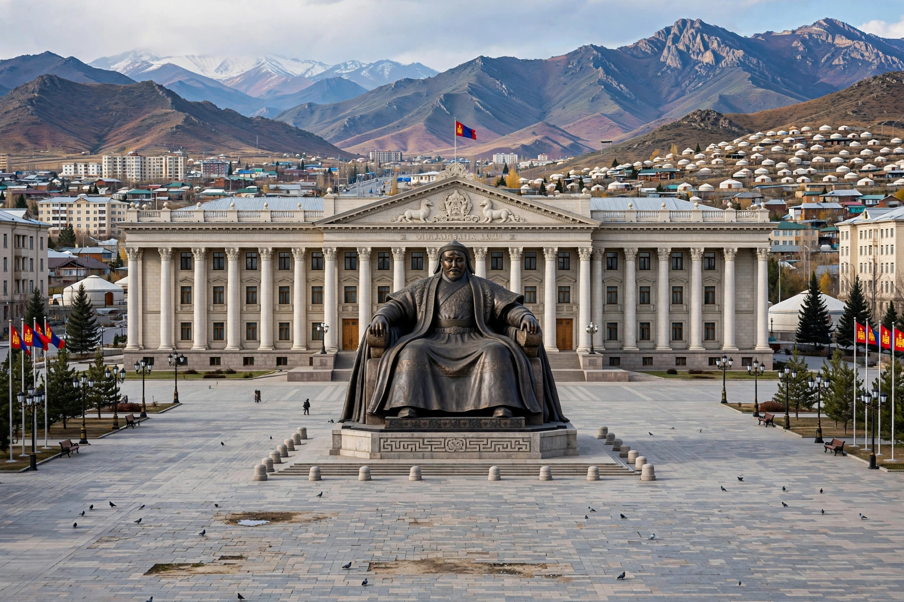

[Image placeholder: Sükhbaatar Square and the Government Palace, Ulaanbaatar]| Country | Mongolia |
|---|---|
| Population | About 1.7 million — roughly half of Mongolia |
| Elevation | About 1,350 m |
| Climate | Coldest capital city in the world (by annual average temperature) |
**Ulaanbaatar** is the capital and primate city of Mongolia, in the valley of the Tuul River beneath the sacred Bogd Khan mountain. Founded in 1639 as a mobile monastery town (Örgöö), it settled permanently in 1778 and became the revolutionary capital Urga, renamed Ulaanbaatar ('Red Hero') in 1924 with the Mongolian People's Republic.
Nearly half of all Mongolians now live in the city, split between Soviet-era apartment districts and sprawling ger (yurt) suburbs on the hillsides, where coal smoke makes winter air pollution among the world's worst despite the bitter cold (−40 °C is not uncommon). Landmarks include Gandantegchinlen Monastery (with its 26.5 m Avalokiteśvara statue), Sükhbaatar Square with the Chinggis Khaan statue at parliament, the Zaisan Memorial, and the giant equestrian Chinggis statue at Tsonjin Boldog outside the city.
Post-1990 market transition and rural migration drove unplanned growth; traffic gridlock, ger-district heating, water supply and dzud-driven migration are the city's great problems. Mining wealth (Oyu Tolgoi) has funded new towers in the centre.